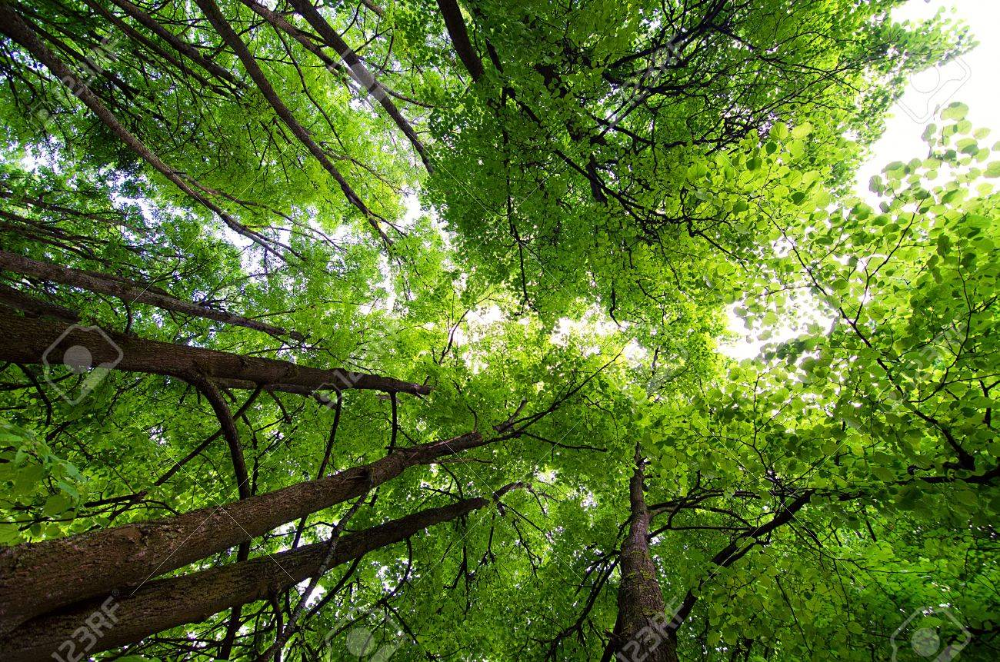
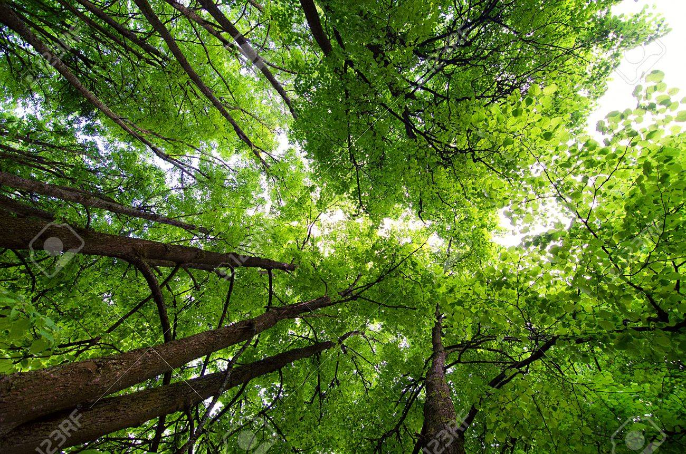

The “Intensifiers” of Climate Change
What are the factors that make climate change worse?
Many things can worsen the effects of climate change, and we must work to prevent it. For example, the burning or use of fossil fuels has led to an increase in the emissions of carbon dioxide among other greenhouse gases. This has made climate change a hard problem to solve. The industries that heavily use fossil fuels, such as those involving the generation of power, can be a possible suspect.
Deforestation can also make climate change worse. People cut down trees to make space for construction; sometimes, even whole forests are cut down. Cutting down trees means that less trees are able to take up CO2, meaning that more CO2 is being released into the atmosphere. This can worsen the effects of climate change and is why we should avoid cutting trees.
 


What are the factors that make climate change worse?

How does climate change affect us?

Why do we need to help in combating climate change?

In what ways can one help in fighting climate change?

List of References Used
References and sources of images used:
- Images:
https://economictimes.indiatimes.com/magazines/panache/climate-change-it-is-a-real-crisis/articleshow/86288242.cms - https://iconarchive.com/show/junior-icons-by-treetog/earth-icon.html
- https://www.pinterest.com/bettermeetsreality/climate-change-global-warming-greenhouse-gas-carbo/
- https://www.123rf.com/photo_21350946_crone-of-trees-in-forest-from-below.html
- https://www.scientificamerican.com/article/melting-ice-sheets-could-worsen-extreme-weather/
- https://phys.org/news/2021-09-impacts-deforestation-forest-biodiversity-amazon.html
- https://www.nrdc.org/stories/how-you-can-help-fight-climate-change
- http://clipart-library.com/clipart/8c65XakEi.htm
- https://apastyle.apa.org/style-grammar-guidelines/references
- https://en.wiktionary.org/wiki/question_mark
- https://thumbs.dreamstime.com/b/seamless-geometric-vector-floral-pattern-small-leaves-monochrome-polka-dot-cute-simple-nature-background-prints-173518514.jpg
- https://edinburghsensors.com/news-and-events/impact-of-technology-on-the-environment-and-environmental-technology/
- https://www.un.org/sustainabledevelopment/sustainable-consumption-production/
- Information:
https://www.nrdc.org/stories/global-climate-change-what-you-need-know - https://www.climate-policy-watcher.org/global-temperatures/the-warming-effects-of-the-industrial-revolution.html
- https://www.landmarkacademyhub.co.uk/climate-change-impacts-of-the-industrial-revolution/
- https://www.ipcc.ch/2021/08/09/ar6-wg1-20210809-pr/
- https://theconversation.com/the-industrial-revolution-kick-started-global-warming-much-earlier-than-we-realised-64301
- https://www.un.org/en/observances/forests-and-trees-day
- https://www.un.org/en/climatechange/climate-solutions/cities-pollution
- https://www.un.org/sustainabledevelopment/sustainable-consumption-production/
© 2021 Vinluan
Contact me: b2025idrvinluan@pshs.edu.ph